I finally got around to the last bits I wanted to do. Here's the state I'd left the Vinocaster in after the last phase of work, the wood surface is completely raw:
One job that needed doing was to tidy up the nut. Although the slot depths were as good as I'm likely to be able to get them without special tools (I used carving knives & needle files to get this far), there was a lot of surplus above the string that was kind-of in the way.
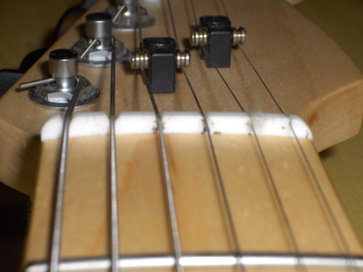
The middle pickup (a Seymour Duncan Duckbucker) didn't work very well in this combination (Seymour Duncan Cool Rails and TV Jones Magna'Tron), so I wanted to replace that. Slightly trickier was what to do about the veneer scratchplate and control panel. I'd backed them with a smear of epoxy and a layer of thin copper foil. Although they lasted ok since the last assembly, it was obvious they were a bit flimsy to stay the course any length of time.
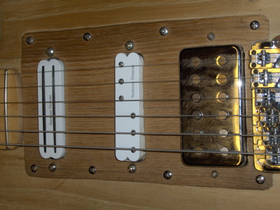
Here's the control panel :
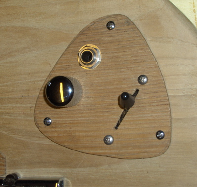
I also wanted to rearrange the controls a little, the volume control was still too close to the picking area for my liking (bridge is in the bottom left corner in this pic).
When I did the initial body shaping I left it quite chunky, in part because I was impatient but also because I wasn't entirely sure of how I wanted the shape to go. Basically I wanted to see what it felt like, and get it to suit my shape as well as possible. I'd modelled the curves on my Squier Strat, but the body of the Vinocaster is a fair bit thicker. Here's what turned out to be the most significant part, the top curve was quite uncomfortable.
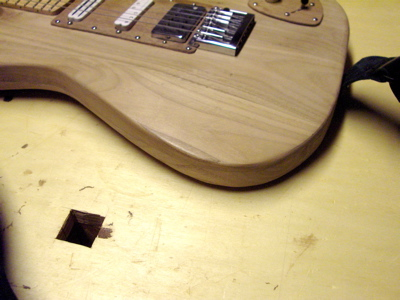
It was definitely a good idea to use the thing for a couple of months before finalising the shape. The wood had been polished and gone a little darker where it'd had a lot of rubbing, which made a handy guide. For example, though it's not clear on this photo the area where my right arm rested (uncomfortably) on the lower bout was plain to see.
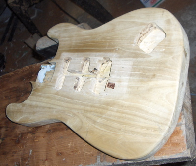
Here's new hardware I was fitting - locking strap nuts, a proper 5-way Strat switch and a Fender Lace Sensor pickup (untried by me, I could only go by what was said online about it).
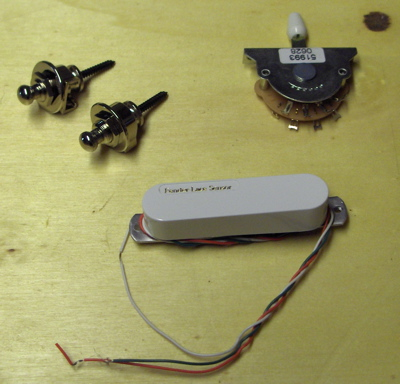
So, to work. I started with the body reshaping, using an old spokeshave, a gouge & mallet and carving knives. The ancient bench Achille next door has given me on long-term loan was perfect for the job.
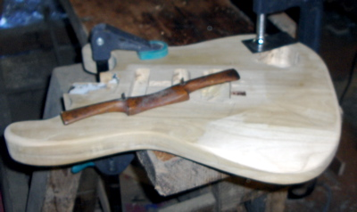
Here's the back after shaping and a bit of sanding:
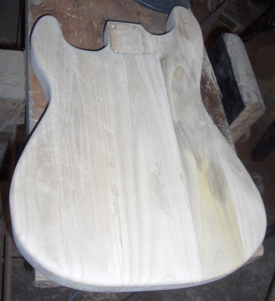
...and here's the back when the sanding was nearly done. I sanded a fair bit with a small rechargeable vibrating sanding pad thing, continuing by hand when the battery ran down.
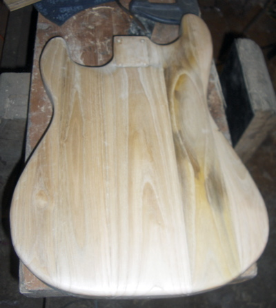
When I was reasonably happy with the sanding, I gave it a coat of olio pagliarino (straw oil?), the stuff they use around here where in the uk you'd expect to see linseed oil. The stuff doesn't actually set, just soaks in gradually. I kept the body wet with the stuff for 3 or 4 days.

The wood didn't go quite as dark as I expected, but more honey-coloured, a pleasing shade. The odd-coloured strip showed up more, but I'm not bothered about that.
Here's the front after sanding, the wood actually started to take on a bit of a sheen before I even got to the oil. I'd also added thin copper foil to screen the cavities.
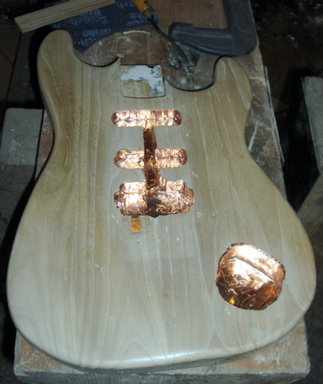
While the oil was soaking in I had half an hour here and there on other bits. To strengthen the scratchplate and control panel I decided to back the veneer with copper sheet (I'd spotted some in the back of the cantina that looked perfect). I haven't got any tin snips, not sure they'd have been any good anyhow, the copper was very stiff. So I cut the shapes out using an old chisel blade and a small lump hammer, nibble, nibble... Here's the control panel backing in progress:
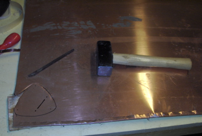
Here's the scratchplate backing in progress, on the left is the veneer to which it has to attach.

After cutting out, I bashed the shapes flat as best I could (using the hammer against the lump hammer in a vice) and filed off the worse sharp bits. To glue the veneer to the backing plates I screwed the combination to a bit of scrap wood and clamped:
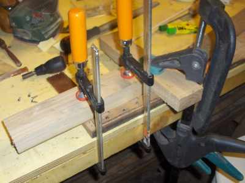
Here's the immediate result:
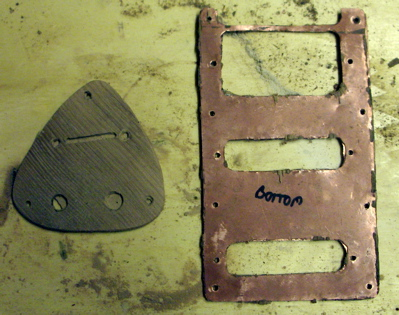
Next I cleaned up, sanded & oiled the plates.
At this point I noticed my assembly bench could do with tidying:
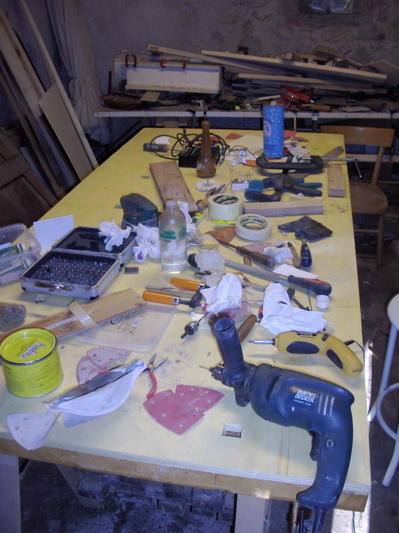
After the oil on the guitar body had about 3 days to soak in, I wiped it clean and left it overnight for the surface layer to soak in a bit more. Then I gave it a rub-down with beeswax furniture polish, giving it a night in between to dry up. I then lined the cavities with thin copper foil to screen them. I also gave the scratchplate and control panel a coat of wax polish.
Now it was time to think about putting the thing back together again. Here are the component parts:
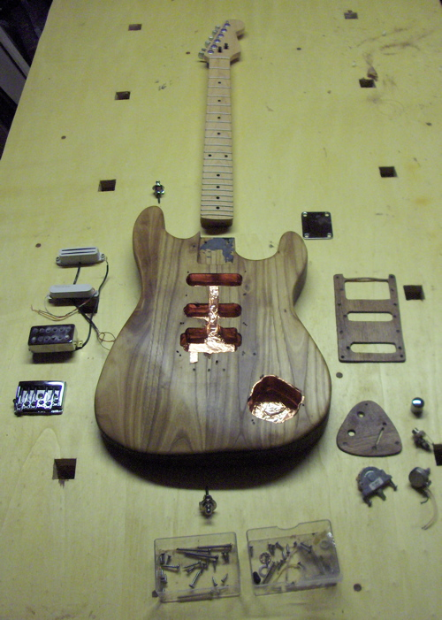
I started by fitting the neck & bridge, which allowed me to make a first check that the plates would still fit:
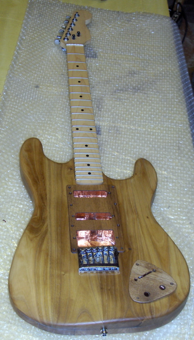
This looked ok, so next came the wiring. The Fender instructions weren't much help:
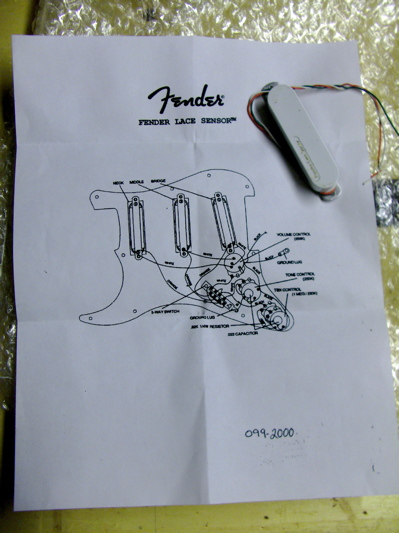
Luckily the switch was self-explanatory:
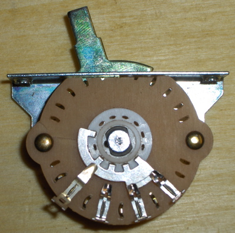
When I'd attached the switch, volume pot. and jack socket to the modified control plate I discovered it didn't fit the cavity any more. Out with the carving tools:
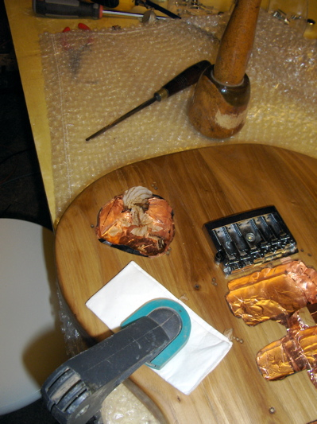
The same thing happened with the pickups, I had to trim a millimetre or two off the ends of the cavities to get them to fit without straining. Getting the wires through the small hole between the pickup cavity and the scratchplate cavity was a nightmare (again). Once fitted I tested the everything by fitting just one string and twanging into a little amp. I'd got the pickup phase right first time, although something kept shorting in the control cavity, so after spending ages trying to apply bits of insulating tape to the possible culprits I wound up pulling out the screening foil from that cavity altogether. May have to revisit if it hums too much (it shouldn't, there's not much exposed wire and the panel now has its copper layer which is grounded).
After all this I put on some new strings. Here's what the fitted pickups look like:
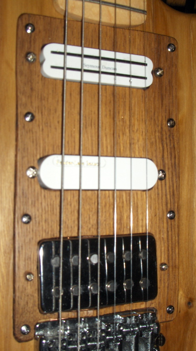
Here's the rearranged control plate in situ (sorry about the blur, I'll replace this later). Bridge would be bottom-left, so the switch is now nearest my picking hand (the near-vertical angle of that feels a bit weird, but the general position seems ok and I should get used to it soon enough) :
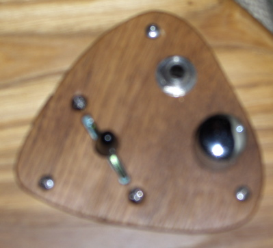
I hadn't had to do anything with the tuners (machine heads), although gave them a gratuitous wipe with gun oil. As I was stringing up I was thinking how convenient the locking screws were on them. You push the string through as usual, then tighten the thumbscrew at the back and snip the excess string before tuning up. I should have kept my mind on what I was doing, because I made a little boo-boo which needed a clunky workaround (you can also see the cleaned-up nut here) :
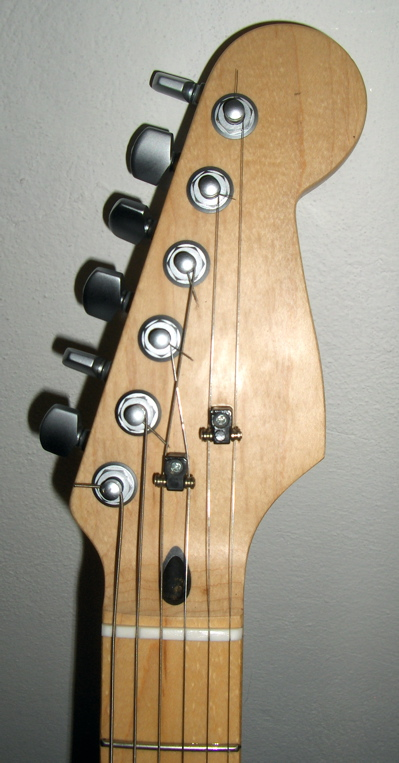
Now came the moment of truth, plugging it into the proper amp and trying it out. It worked a treat. I haven't yet got around to final adjustments of the bridge, but with the way I had it set before it's approximately right. The Fender Lace Sensor pickup was a success, sounded great. Its output was quite a bit lower than the other two pickups but I was able to adjust the relative pickup heights enough to get a reasonable balance.
So, finally here are the three different assembled stages
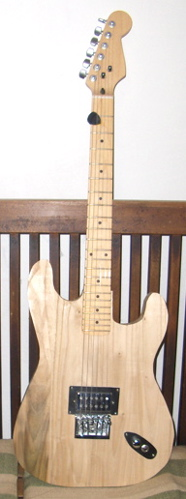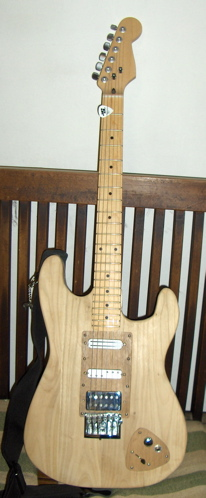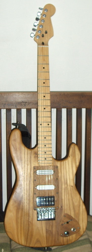